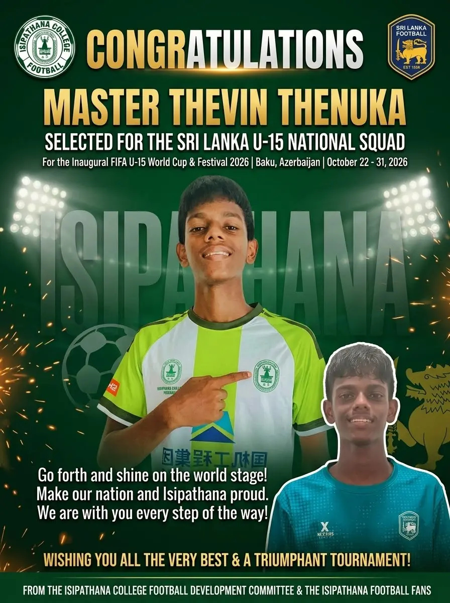
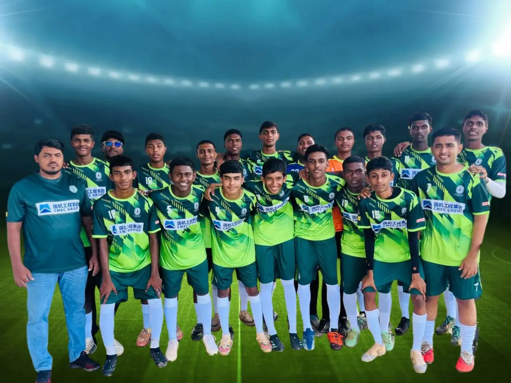
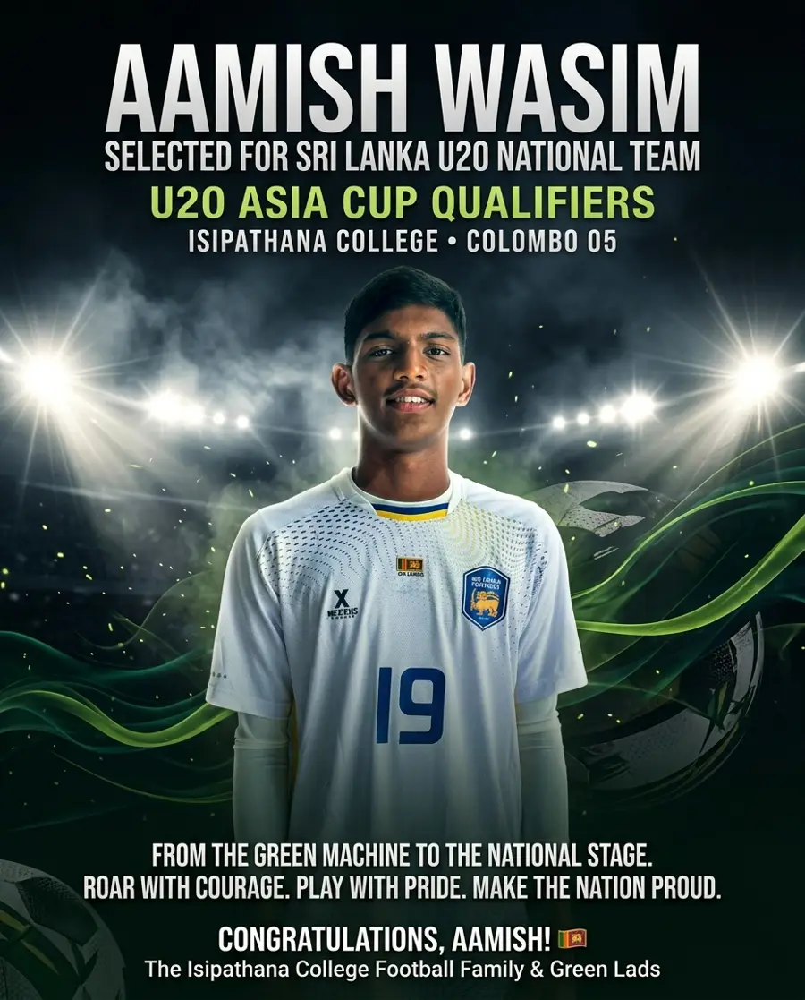
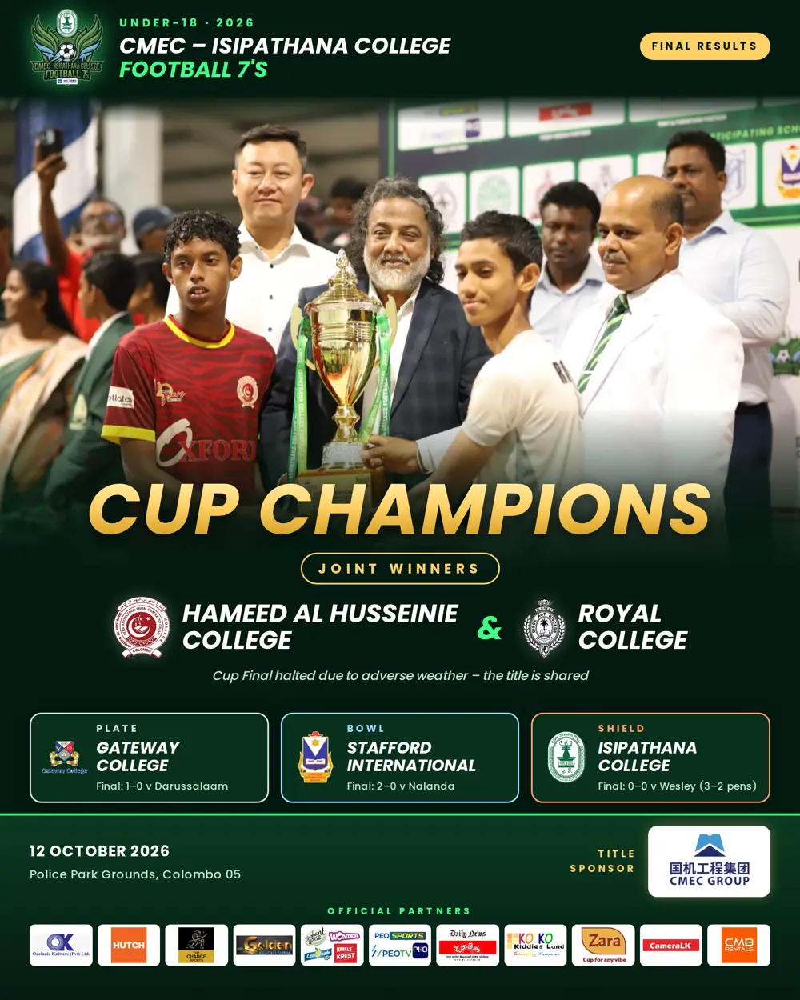
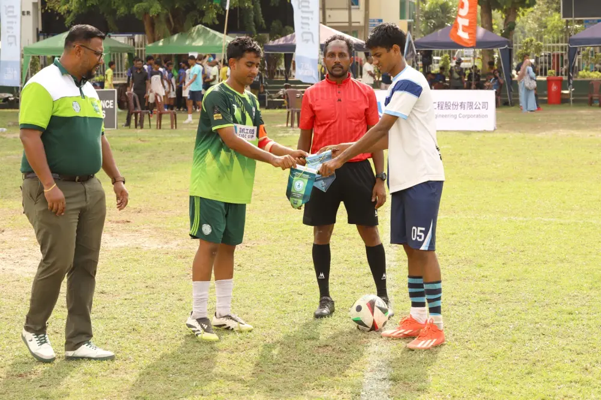
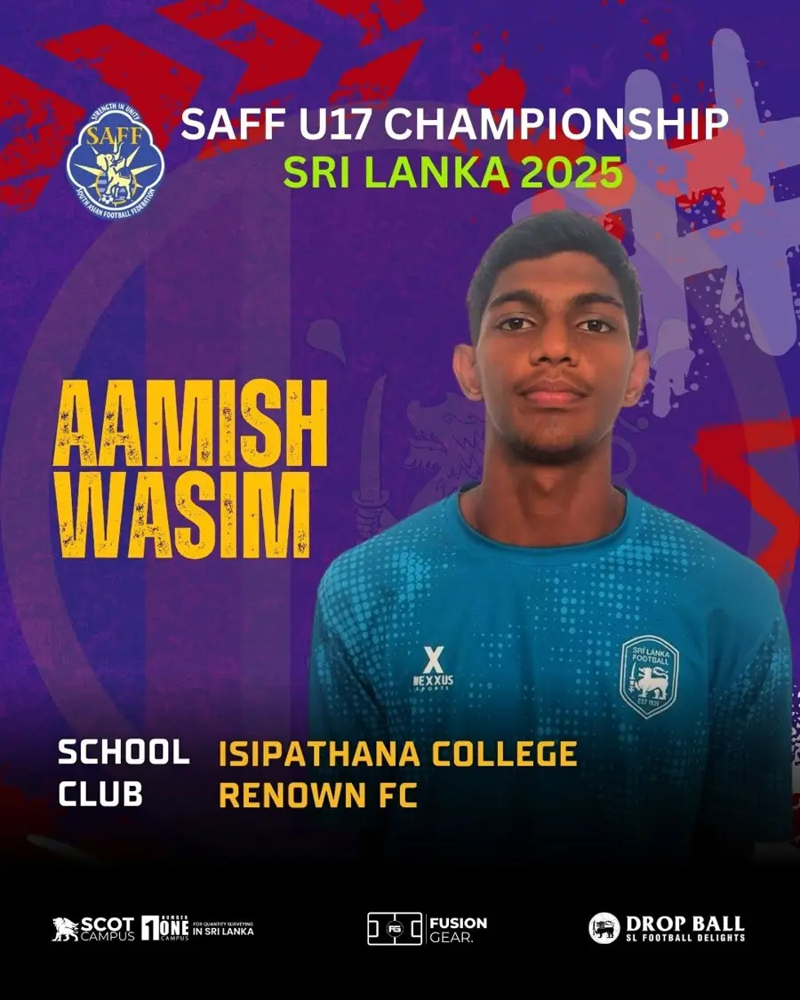

Honouring the leaders who elevated Isipathana College Football over the past 10 months in 2026: Mr. Nimal Lakshman (Senior Vice President), Mr. Isuru Wickramawardana (Chairman – Football), Mr. Sudath Thalahitiya (Vice President – Finance), Mr. Mervin Preena (Vice President – Sports) and Mr. Ranga Gunasekara (Secretary – Sports).
A sincere thank you for your outstanding service, visionary leadership and generous contributions toward developing and elevating Isipathana College Football in 2026. We congratulate you and wish you the very best in all your future endeavours!
Congratulations to Aamish Wasim, who has represented Sri Lanka at Under-17 (SAFF U17 Championship 2025) and Under-20 level (U20 Asia Cup Qualifiers and SAFF U20 Championship 2026), and to Thevin Thenuka, representing Sri Lanka U-15 at the Inaugural FIFA U-15 World Cup & Festival 2026 in Baku, Azerbaijan.
The entire Isipathana football family is proud of you! 💚
With warm congratulations from the Isipathana College Football Development Committee.
To support our young national star on his journey to Baku, Azerbaijan, the Secretary of the Isipathana College Football Development Committee, Mr. Dulanga Attale, presented a pair of professional football boots to Master Thevin Thenuka today.
Step onto that global pitch with confidence, Thevin! The entire Isipathana Football fraternity is right behind you as you represent Sri Lanka at the Inaugural FIFA U-15 World Cup & Festival 2026. Shine bright and make us proud! 💚🦁
Congratulations to Thevin Thenuka, a proud product of Isipathana College Football, who represents Sri Lanka at the inaugural FIFA U-15 World Cup & Festival 2026 in Azerbaijan. Here are Sri Lanka's matches. Let's get behind Thevin and the team!
24 Oct4:00 PMSri Lanka v CzechiaHovsan Competition Complex · Pitch GA
25 Oct2:15 PMSri Lanka v US Virgin IslandsHovsan Competition Complex · Pitch 18
Times as published by the organisers. All the very best from the Isipathana College Football Development Committee.

Thevin Thenuka selected for the Sri Lanka U-15 squad
Isipathana's Thevin Thenuka has been selected for the Sri Lanka U-15 national squad for the inaugural FIFA U-15 World Cup & Festival 2026 in Baku, Azerbaijan, from 22 to 31 October 2026. Go forth and shine on the world stage, Thevin!

Isipathana back in Division 1 after 20 years
For the first time in 20 years, Isipathana College played in the Division 1 National Championship in 2026. The team finished 3rd in the group stage and has qualified to play in Division 1 again in 2027.

Aamish Wasim selected for the Sri Lanka U20 national team
Isipathana College's Aamish Wasim has been selected for the Sri Lanka U20 national team for the U20 Asia Cup Qualifiers. From the Green Machine to the national stage, congratulations Aamish from the whole Isipathana football family.

Shield title for Isipathana at the CMEC – Isipathana College Football 7's
Isipathana College won the Shield at the 2026 CMEC – Isipathana College Football 7's (Under-18) at Police Park, beating Wesley College 3–2 on penalties after a 0–0 final. The Cup Final was halted by adverse weather, and the title was shared by Hameed Al Husseinie College and Royal College.

Twelve schools, one day of football at Police Park
Twelve schools took part in the CMEC – Isipathana College Football 7's 2026, organised by Isipathana College with CMEC Group as title sponsor. Gateway College won the Plate and Stafford International School won the Bowl.

Aamish Wasim in the Sri Lanka squad at the SAFF U17 Championship
Aamish Wasim represented Sri Lanka at the SAFF U17 Championship 2025, held in Sri Lanka.
Live from Facebook
Latest posts
Videos
All videos
Hear it from the Master in Charge of Isipathana College Football
Hear it from the Captain: CMEC – Isipathana College Football 7's 2026
The ultimate showdown is almost here: CMEC – Isipathana College Football 7's
Mr. Manjula Sirisena, former national football player and proud Isipathanian
From the memories of the pitch to inspiring the next generation
Mr. M.A. Abdeen, Isipathana alumnus, on the football community
Mr. M.F.M. Irshad, a proud old boy of Isipathana College
Mr. Akila Prabath, a proud old boy of Isipathana College
Mr. K.G. Nalin, a proud old boy, on the past and the future